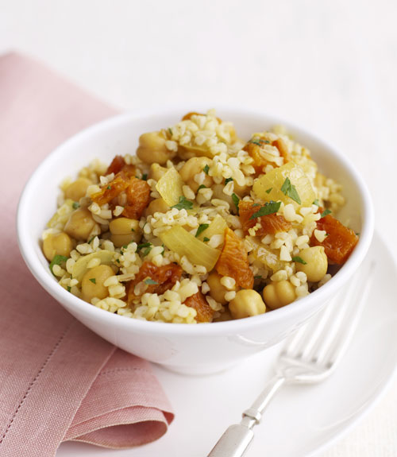
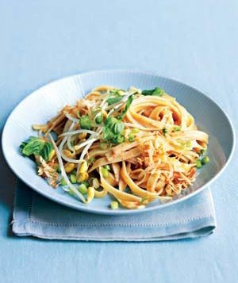
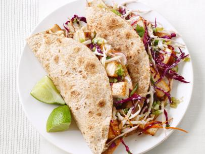
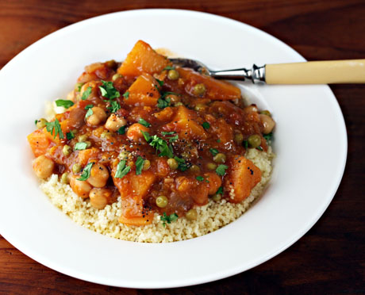

Pilaf
This is a list of the ingredients for our Bulgur Pilaf with Garbanzos and Dried Apricots
Bulgur Pilaf with Garbanzos and Dried Apricots
Water
Vegtable Broth
Olive Oil
Onion
Curry Powder
Garlic
Chickpeas
Dried Apricot
Salt
Parsely Leaves
Preparation
In 2-quart covered saucepan, heat water and 1 1/4 cups vegetable broth to boiling on high. Stir in bulgur; heat to boiling. Reduce heat to medium-low; cover and simmer 12 to 15 minutes or until liquid is absorbed. Remove saucepan from heat. Uncover and fluff bulgur with fork to separate grains.
Meanwhile, in 12-inch nonstick skillet, heat oil on medium 1 minute. Add onion and cook 10 minutes, stirring occasionally. Stir in curry powder and garlic; cook 1 minute.
In a large skillet, over medium heat, cook the olive pesto for 2 minutes.
Add the spaghetti, reserved pasta water, black olives, and salt and cook until the water is absorbed and the spaghetti is heated through.
Spicy Coconut Noodles
This is a list of the ingredients for our Spicy Coconut Noodles
Delishous Spicy Coconut Noodles
Rice Noodles
Coconut Milk
Tomato Paste
Chilli Powder
Kosher Salt
Chili Paste
Scallions (Thinly Sliced)
Bean Sprouts
Basil Leaves
Coconut (Shreadded & Toasted)
Preparation
Cook the noodles according to the package directions. Drain and set aside.
Meanwhile, in a large saucepan, over medium-high heat, combine the coconut milk, tomato paste, chili powder, salt, and chili paste (if desired).
Bring to a boil, then reduce heat and simmer for 2 to 3 minutes.
Stir the drained noodles into the sauce and toss. Divide among individual bowls. Top with the scallions, sprouts, basil, and coconut (if desired).


Tacos
This is a list of the ingredients for our Tofu Tacos
Tofu Tacos
Extra firm tofu
Whole wheat flour
Nutritional yeast
Onion powder
Garlic powder
Tumeric
Bragg liquid aminos
Corn tortillas
Canola oil
Salsa
Onions (chopped)
Preparation
Drain tofu and place the block on a plate. Cover with another plate and weight the top with a food can or other object of about 1 pound. Let stand 20 to 30 minutes to extract excess liquid. Pour off liquid. Crumble tofu and place it in a bowl. Sprinkle with flour, yeast, onion powder, garlic powder and turmeric and toss. Sprinkle with liquid aminos and toss again.
Heat a large cast-iron skillet or nonstick pan over medium heat until hot. Add tofu mixture and cook, stirring and scraping the bottom of the pan frequently with a spatula to prevent sticking, until tofu is browned and crisp in places. Serve with the warmed tortillas, salsa and toppings of choice and let diners assemble their own tacos.
Peanut-Squash Stew
This is a list of the ingredients for our Stew
Peanut-Squash Stew
Brown rice
Peanut oil
Onions(finely chopped)
Ginger(grated)
Green serano chili(finely chopped)
Garlic(finely chopped)
Salt
Ground cumin
Vegetable broth
Tomato puree
Smooth peanut butter
Squash (peeled, seeded)
Preparation
Heat the oil in a skillet over medium heat. Add the onions and cook about 15 minutes. Add the ginger, chili, garlic, salt, and cumin. Cook 5 minutes more, stirring occasionally. Add the broth, tomato puree, peanut butter, acorn squash, and sugar.
Cook over medium heat, covered, until the squash is tender, about 30 minutes.
Add the black-eyed peas and heat through. Transfer half the stew to a small saucepan and add the chicken (if using). Sprinkle with the peanuts and serve with the rice.
